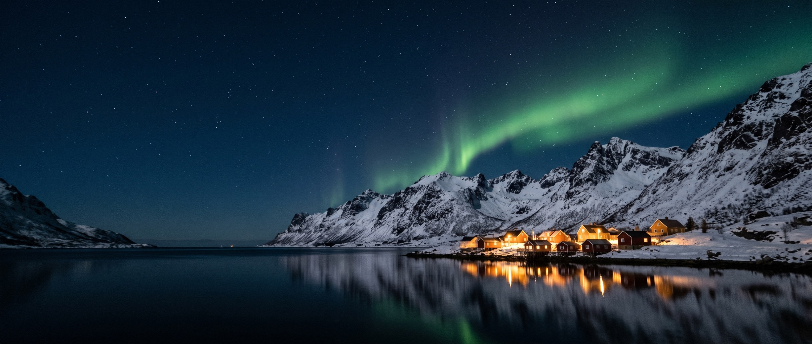
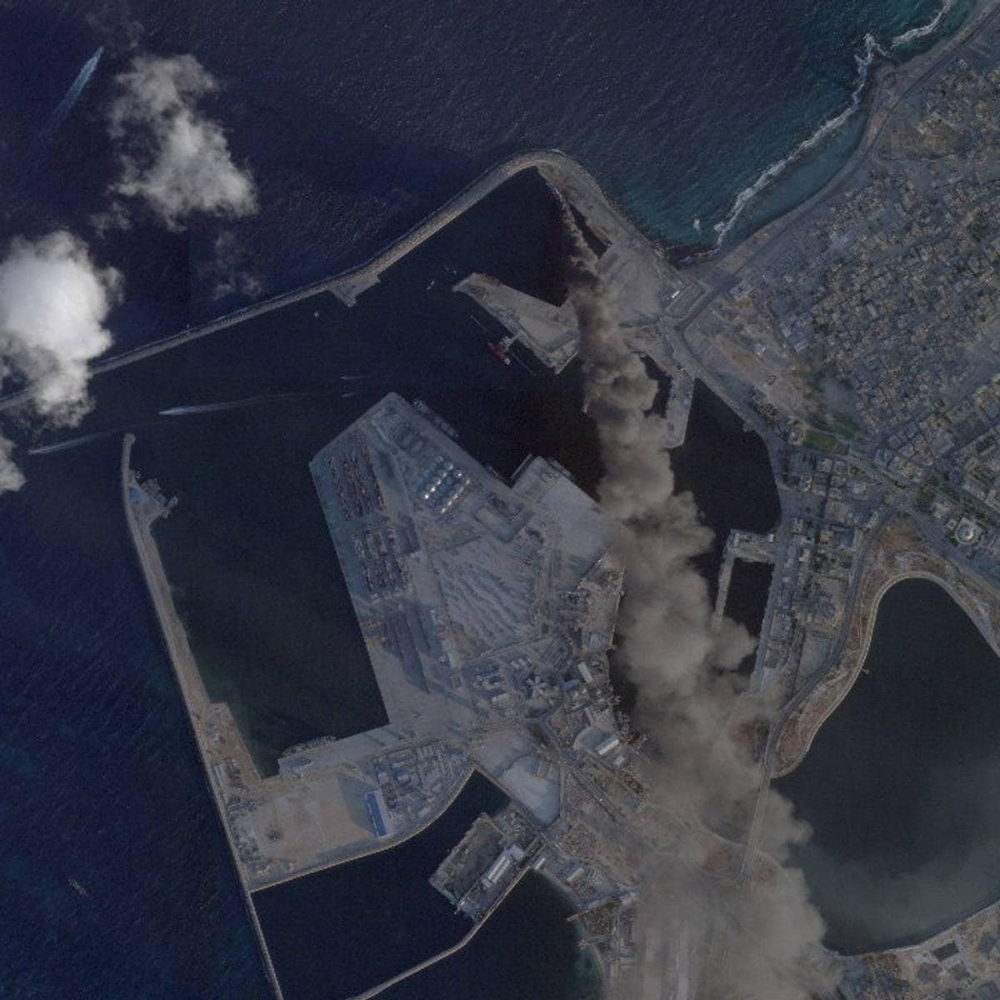
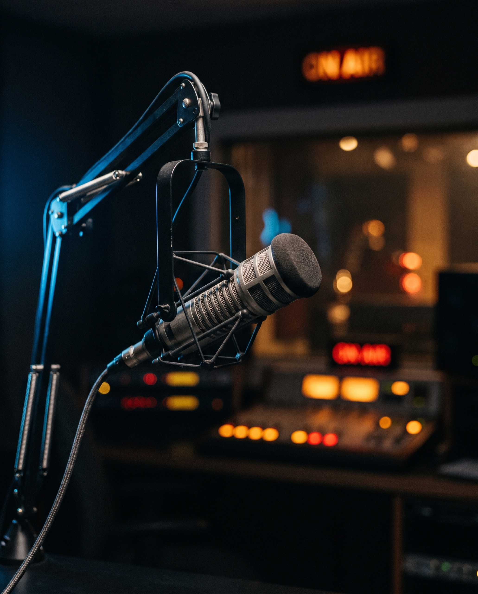
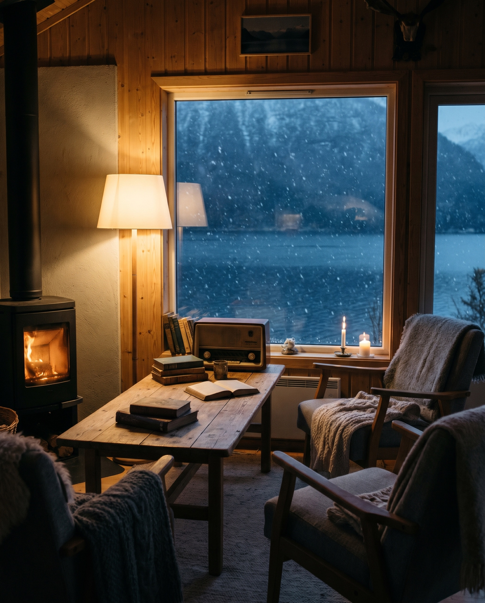
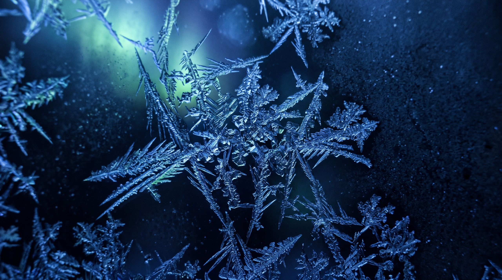
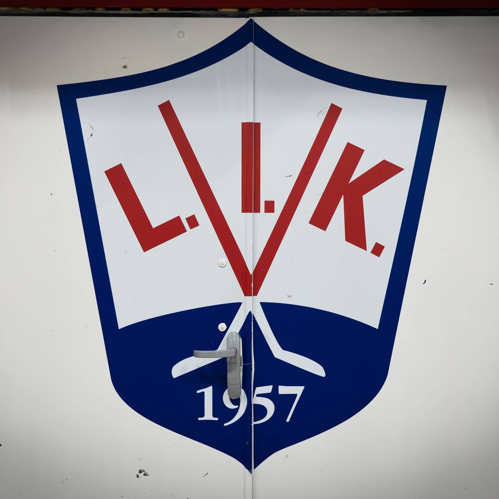
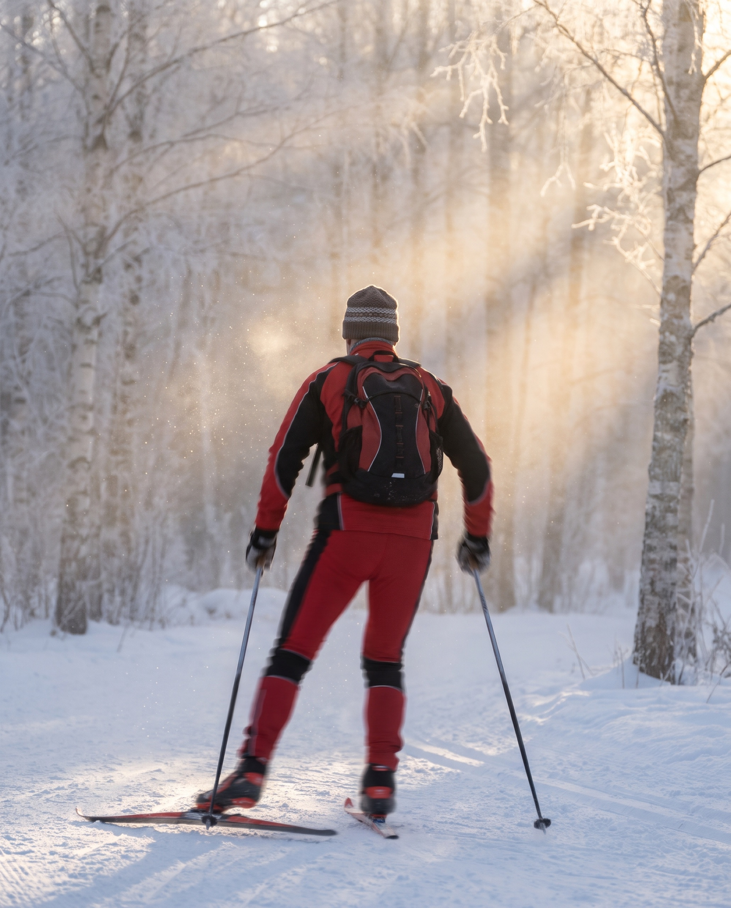
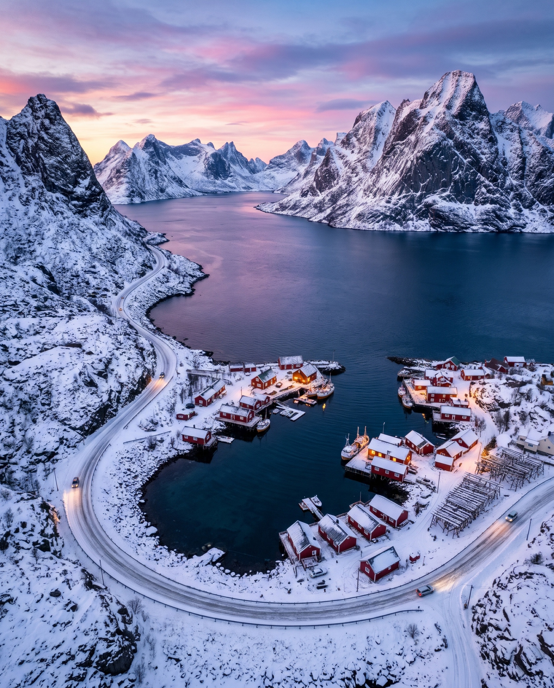
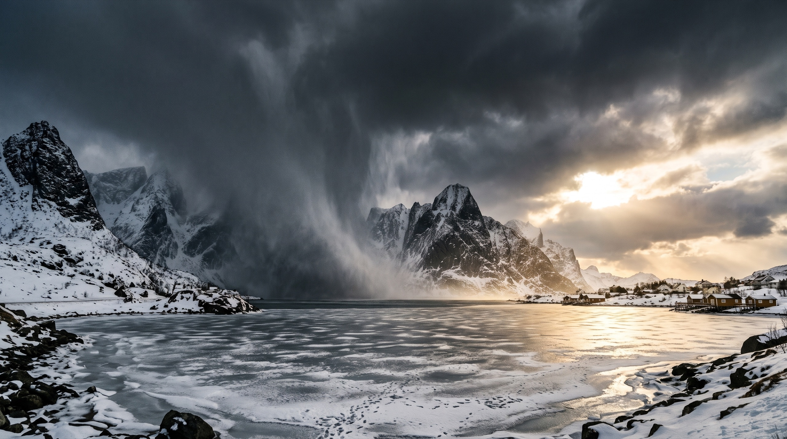
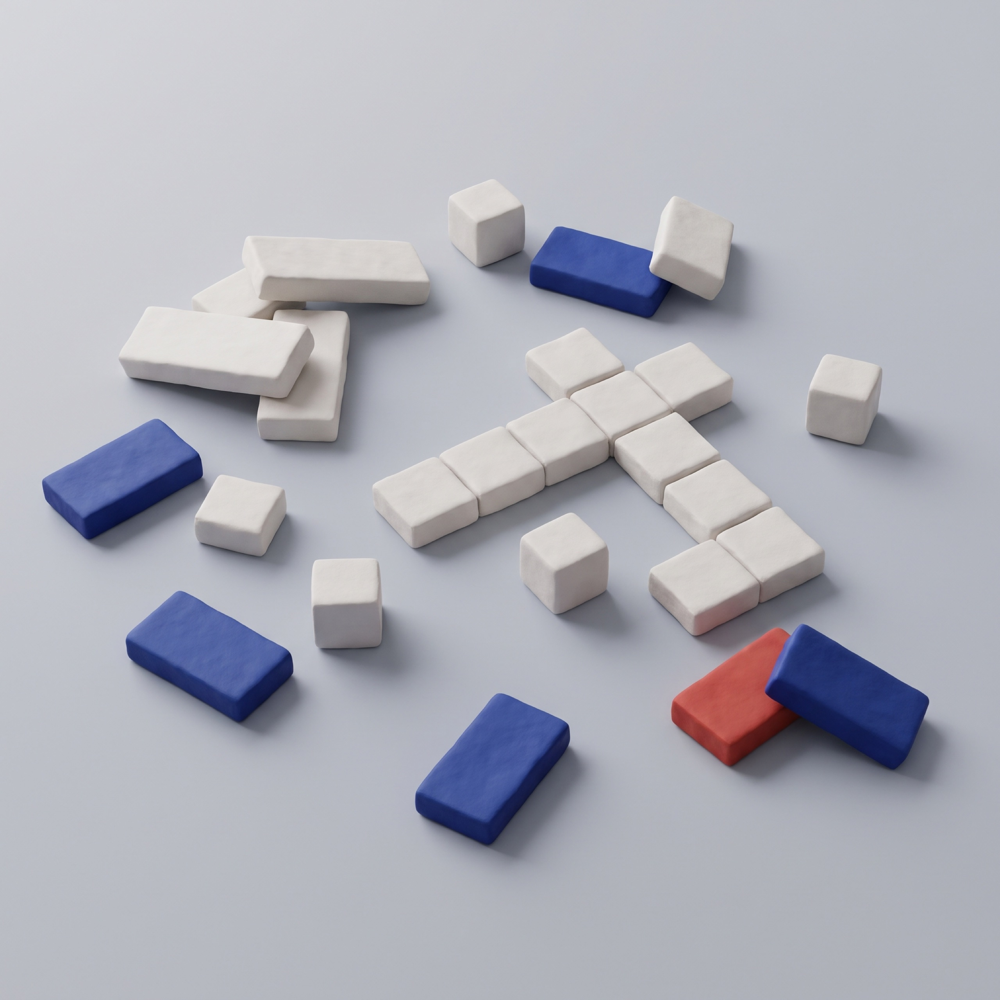

Nyhetsmeldinger
Siste nytt
Alle nyheter
Vi er til for alle i Norge. Uavhengig journalistikk, fra Lindesnes til Vardø, døgnet rundt.
NRK TV og NRK Radio

Direkte nå
Dagsrevyen
Dagens viktigste nyheter, klokka 19.00

Radio · P2
Dagsnytt 18
Debatt og analyse hver ettermiddag

TV · NRK1
Debatten
Samfunnsdebatt hver torsdag

Dokumentar
Brennpunkt
Undersøkende journalistikk

Sport · NRK1
Sportsrevyen
Ukens sport samlet, søndag kveld

Sport

Nyheter fra ditt distrikt

Oslo
−3°
Lettskyet, svak vind fra nord. Snøbyger i kveld.
Ons−1°Snø
Tor−4°Klart
Fre−6°Klart
Lør−2°Skyet
Søn0°Sludd
Gjør dagen morsommere
Daglige minispill og hjernetrim fra NRK. Nye oppgaver hver morgen.
